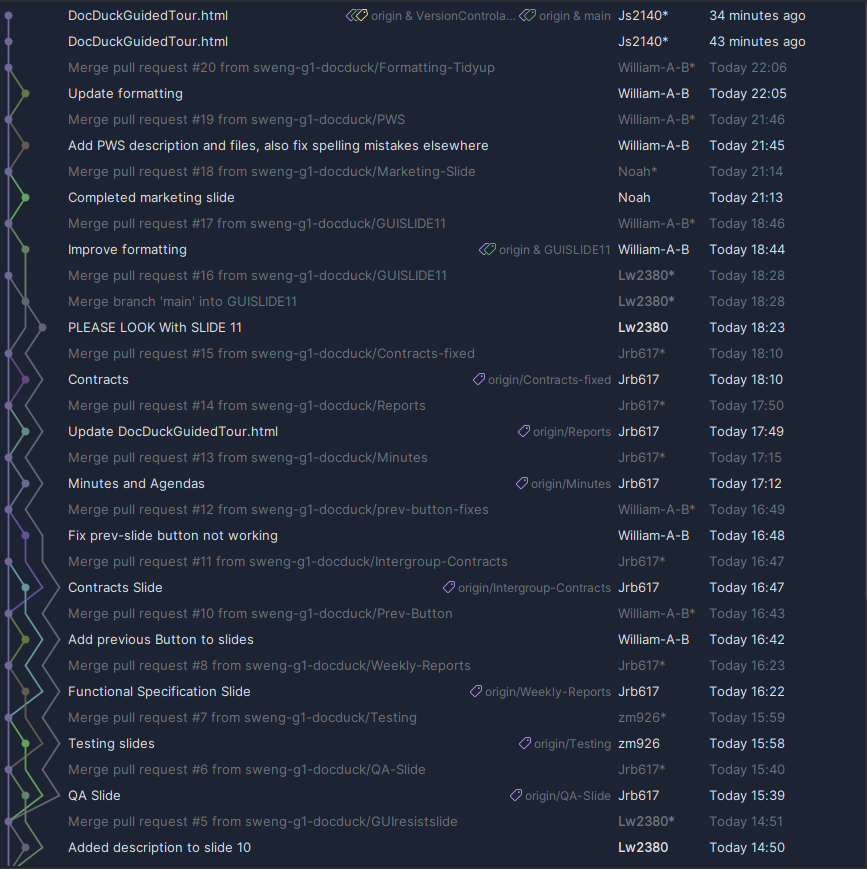
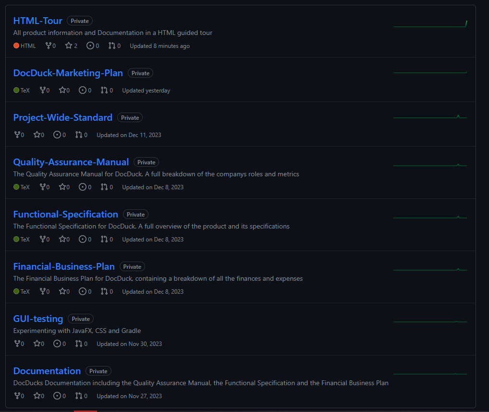

DocDuck HTML Guided Tour
Introduction
This webpage has been created to provide an HTML tour of our product and all associated deliverables. The tour has been organised into multiple slides with one slide per topic, and you can navigate through these slides using the "next slide" button at the bottom of the page. In this tour you will find pages which explain what DocDuck is, what work we have achieved so far, and how we have worked as a team.
Additionally, you will see sections based on each of our deliverables that summarise key components of the documents as well as links and references to all our completed documents
About DocDuck
DocDuck is a maintenance engineering app designed to assist with documentation in the engineering workspace, From keeping track of calibration, audit and diagnostic dates to having a full virtual library of every breakdown ever worked on and every part ever used or purchased. DocDuck is capable of all these features and more.
Quality Assurance Manual
The Quality Assurance Manual is used to ensure quality is maintained suring the project. The document is designed as reference for employees, clients and stakeholders. It is intended to ensure that high quality and consistent standards are adhered to throughout the company's activities. The document establishes the framework for each role and their responsibilities, the deliverables and project management and development methodologies
Each member of the group completed the section for their primary role. This ensures that they are understand the level of quality expected in their contributions to the project. Each member has generated a list of risk managements and quality assurance metrics related to their individual responsibilites. This was to ensure a specific and measurable metric of quality. The QA Manual drafts were sent to the client for review and feedback was integrated for each draft. The final version was reviewed by the whole group and was updated after release
The Project Management Methodology serves as an important reference for the design and programming components of the project. It clearly lays out the specific method to be used for successful implementation of agile development. This is to ensure that the programming created by each programmer is compatible with each other
Below are links to draft and released versions of the document:
Quality Assurance Manual Draft 0.1
Quality Assurance Manual Draft 0.2
Quality Assurance Manual Release 1
Functional Specification
The Function Specification outlines the functionality and requirements for the software. It is designed to lay out, in easy to understand terms, the specifics of the project. The Functional Specification acts as a blueprint for the developers and designers when creating the program. The document contains sections describing:
- Product Overview
- Product Scope
- Solution Overview
- Functional Specifications
- System Configurations
- Other system and none functional requirements
- Integration Requirements
The requirements and use cases are used to facilitate the ease of use of object oriented programming and agile development. The Project Overview and Scope ensure that stakeholders can clearly and concisely see the scope of the project so that they can easily understand what they are investing in.
To ensure that the Functional Specification was completed to a high standard, the individual subsections were divided between the group members. Draft versions were sent to the client for feedback which was integrated into the next release. The document was reviewed by the whole group prior to release and continued to be updated after release.
Below are links to draft and released versions of the document:
Functional Specification Draft 1
Functional Specification Draft 2
Functional Specification Draft 3
Financial Business Plan
The Financial Business Plan outlines the financial goals and objectives for potential investors. It provides a detailed overview of the product, the company that will create it as well as the financial plans and strategies that will ensure the project meets its financial targets. The plan is designed to convince an investor to invest in the product and to give them the confidence and vision to support it.
The Financial Business Plan was completed largely by the Financial Managers with assistance from some other members.
The Business Plan uses graphs and tables to lay out the required costs for completion of the project, breaking these down into week-by-week and cost-by-cost bases. This allows a potential investor to see an accurate and itemised vue of where and when costs are expected to occur.
Below are links to draft and released versions of the document:
Financial Business Plan Draft 1
Financial Business Plan Draft 2
Financial Business Plan Release 1
Financial Reports
Below are links to the Financial Reports, which document the financial progress of the project. They are used to track our spendings compared to our assigned budget.
Marketing Plan
Our Marketing Plan outlines our strategies and approaches for promoting our product. This document contains the following sections:
- Competitive Market Analysis
- Pricing Proposal
- Design Theory
Our product analysis contains market research of our competitors, our Unique Selling Points (USPs), our target audience, and a SWOT analysis.
This document is essential for aligning our marketing strategies and the making of one coherent plan. It is still in its draft form, containing contributions from Noah, Hari, Luke, Jabez and Josh.
Our first draft can be found below:
Project Wide Standard
The Project Wide Standard provides guidelines and rules to describe the expected elements in the XML documents to be interpreted by the software. It will be used to verify each piece of item content in a document, to assure it adheres to the description of the element it is placed in.
The project wide standard ensures consistency, maintainability, and collaboration accross the project.
The Project Wide Standard format we have decided to choose, is an XSD Schema. This is the simplest and cleanest method for providing the rules for XML files to follow.
Project Wide Standard Release 1 (Final Version)
Additionally, we have developed our own schemas by extending the Project Wide Standard for the purposes of more advanced GUI control and data storage
Inter Group Contracts
As part of the requirements to buy in at least two media handlers, 5 contracts have been agreed between DocDuck and BookCook. DocDuck is buying from BookCook java librarries designed to diplay audio and video and selling them libraries to display graphics and text. The contracts lay out what the buyer expects in terms of payment and delivery schedule as well as coding and functional specifications.
Links to the signed contracts have been provided below:
Graphics Handler Sale Contract
Audio Handler Purchase Contract
Video Handler Purchase Contract
An ammendment has been agreed between DocDuck and BoocCook to the Text Handler Contract to clarify the requiremtnes for input format of the library outlined below:
Text Handler Sale Contract Amendment
An additional contract has also been agreed between DocDuck and BookCook after the initial contract period for the sale of an addition to the Text Library outside the bounds of the original contract:
Meeting Minutes and Agendas
Minutes are taken during meetings to document the discussions during, and actions to be undertaken after, each meeting. Meeting minutes are filled in during the meeting by a QA and Documentation Manager. An agenda for each meeting is set before it by a Project Manager and available before each meeting for group members to familiarise themselves
Links to the minutes and agendas have been provided below:
Meeting Minutes and Agendas - September 2023
Meeting Minutes and Agendas - October 2023
Meeting Minutes and Agendas - November 2023
Meeting Minutes and Agendas - December 2023
Meeting Minutes and Agendas - January 2024
Meeting Minutes and Agendas - February 2024
Meeting Minutes and Agendas - March 2024
Meeting Minutes and Agendas - April 2024
Timesheets
To track individual progress, a weekly timesheet/report has been used. This contains information of which meetings the employee has attended, how long they have worked each week, and what work has been completed each week. The reports should be ratified by a QA and Documentation Manager each week.
GUI Demos and Source code
UX Designs with Figma and GUI Demo Designs with JavaFX and Gradle: On the left is a interactive login page for DocDuck and on the right is a UX design of a home page with scrollable text.


HTML Mockup Example
HTML Mockup Example of our software application, includes the home page for Engineer, Click the link and scroll on each side of design
GUI HTML Mockup
More GUI mockups
Below are more mockup examples, On the left is a mockup example of the admin page and on the right is an example of the machine status overview page.


TDD Example
Provided below is a basic structure for the LoginSystem class and its corresponding test class LoginSystemTest in the following PDF file.
The second link is the Test & Integaration Plan
The thrid link is the test reports
TDD Example for Login System
Test & Integaration Plan
Test Reports
Version Control Examples Within Project
In our project we have an organisation on GitHub with multiple Repositories where we all contribute to documents from Overleaf (Latex), Java and HTML. .
On the Left is an example of Commits and Branches within out HTML tour and on the right is our Repositories for our project so far.
 